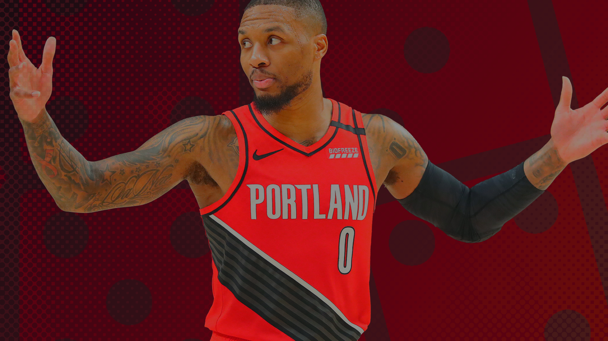

The NBA’s biggest game of dominoes
Many experts are saying the mid-season trade market will be ripe with star trades. With a few players already on the market, which domino will be the first to fall?
Sean Carroll illustration
S omething that flew under the radar in the 2021 free agency period was the number of contract extensions signed.
Yes, some significant players swapped jerseys, but on the whole, there were no superstars taking their talents to South Beach or forming a superteam. In fact, a lot of the players who would really make a title-changing impact in free agency didn’t even get to the moratorium period, re-upping with their current team before their contract had expired.
Steph Curry, Kevin Durant and Jimmy Butler were all about to be unrestricted free agents in their prime but re-signed with their current teams. Kawhi Leonard was one of the lone superstars in free agency but he returned to the LA Clippers on a four-year deal. Kyrie Irving and James Harden are expected to re-sign with the Brooklyn Nets soon.
This is on top of the early contract extensions to Rudy Gobert, Paul George, LeBron James and Giannis Antetekoumnpo a season prior.
Bobby Marks, ESPN wrote at the conclusion of free agency that these superstar extensions will lead to a lacklustre 2022 free agent class.
“Because next offseason is average at best in talent, I am expecting the trade market to be extremely active during the regular season,” a Western Conference general manager told Marks.
The best free agents in the class of 2022 are Zach LaVine, Bradley Beal and 2020 Tokyo Olympic bronze medallist Joe Ingles.
Traditionally, we’d look at teams with young talent and plenty of cap space as desirable situations. Now, it’s looking like the desirable teams are more trade-ready, signing players on team-friendly deals and holding onto them as matching salaries in a deal.
Look at the New York Knicks, a team thirsty for elite talent. When the music stopped this summer, there were no star free agents on the market. Instead of kicking the can down the road with one-year deals, they spent their money elsewhere, signing Evan Fournier and Kemba Walker to solid value deals and re-signing Alec Burks, Nerlens Noel and Derrick Rose.
If a superstar requests a trade, hoping to land in New York, the Knicks can send out Fournier, one of those mid-tier deals and a young prospect plus draft assets and keep their core intact.
But who exactly would they trade for? Let’s get into the huge domino pile that is the NBA’s trade market.
The first domino: Damian Lillard
The reason we haven’t seen a Ben Simmons trade happen yet is because Daryl Morey is holding out for the big pieces. The biggest piece out there is Damian Lillard, who has had an up-and-down offseason with the Portland Trail Blazers.
Side note: The Deep Two NBA Podcast recently tried to remedy the Portland situation with several fake trades we all think would help.
Henry Abott, TrueHoop reported during the start of the Olympics that Lillard will definitely request a trade from his team, citing the lack of a championship roster. Dame shot back on Twitter and with a few quotes from Chris Hayens Yahoo! Sports that should make Portland fans happy.
It’s kinda ugly, and to be honest, after the Larry Nance Jr. trade (that’s what it should be referred to as since he’s the best player in the deal), there’s reason to believe Dame should run it back to see if he can make a push one last time.
On the other side of the coin, Nance doesn’t fix everything, he’s just a do-it-all role player. And if Nance is the saviour for all of Portland’s forward issues, why didn’t Robert Covington, Derrick Jones Jr., Trevor Ariza, Kent Bazemore, Rodney Hood, Jake Layman, Allen Crabbe, Pat Connaughton, Mo Harkless, Nik Stauskas, Al-Faruq Aminu or Evan Turner fix the problem?
Regardless, the last we heard, Dame hasn't requested a trade.
The second domino: Ben Simmons
This is fucking gross.
I’d like to imagine Morey when he’s settled down at home. Dusting off a glass of red while watching yet another re-run of Benedict Cumberbatch’s Sherlock, gazing up at the stars and thinking to himself about all the great moves he has made. Possibly even seeing them on the ceiling like some less-appealing version of Anya Taylor-Joy on tranqs in The Queen's Gambit.
He signs players to great value deals, he pulls the trigger on trades at the right time and he gets out of sticky situations just in time (see Howard, Dwight or Horford, Al).
The Ben Simmons situation isn’t going away so easily.
Assuming Lillard isn’t asking for a trade, the offers for Simmons aren’t all that sexy. Would you want C.J. McCollum instead? How about Pascal Siakam? Perhaps give Joey Lightyears a buzz and see if you can get a collection of assets? Stuff it, how about Buddy Hield and a bag of chips?
Rich Paul and Klutch Sports get this as well, seeing a clear pathway to the upper hand. Simmons and his camp recently told Keith Pompey, The Philadelphia Inquirer that Ben won’t be reporting to training camp and no longer wants to remain with the franchise.
If Morey thought he could run this fiasco into next season, wait for Dame to request a trade a month into the season, that’s now off the table and there’s a hard deadline.
As one Western Conference executive told Pompey: “Think about three months ago when the Sixers are willing to give up Ben Simmons. You are like, ‘Let’s see what we have to do to get him.’
“Now, the difference is Ben Simmons says he refuses to play for the Sixers. He wants to go to three California teams. There’s so much bad blood between him and the team.”
With a hard deadline on when a Simmons deal, trade partners can now dull their offers and Morey’s glass of red in the evening turns into two, maybe three.
Oh, and Dame liked this photo on Twitter the other day. Take from that what you will.
The domino dealers
Need a hand offloading some salaries mid-season to make a trade work? Don’t worry, both the OKC Thunder and San Antonio Spurs have plenty of room under the cap to absorb unwanted salaries, it’ll cost ya though!
The third ‘break in case of emergency’ dominoes
Zach LaVine and Bradley Beal seem happy with their current situations.
Beal has repeatedly said he wants to stay in Washington, be the franchise player and was positive about the news that Russell Westbrook was traded to the LA Lakers per Fred Katz, The Athletic.
LaVine said he wants his “respect” in a new contract with the Chicago Bulls and then signed with Klutch Sports. Sounds a tad more precarious than the Beal situation, but nevertheless, these two scoring guards appear happy with their current teams and it’s looking like they’ll re-sign.
There’s also a world in which both teams underperform and then the team is left wanting more. Then these two All-Star guards could request a trade. It’ll probably be too late for Morey and Simmons, but the mid-season trade teams could definitely get involved.
The restricted free agent domino
This is an interesting one. Bill Simmons, The Ringer talked a lot about this potential phenomenon after the 2020-21 regular season when Zion Williamson was lobbing some very soft bombs at the New Orleans Pelicans front office.
We haven’t seen a highly-drafted restricted free agent try and leverage their situation before. It’s pretty much impossible for the top-tier guys. Not only does their restricted status mean the original team can match any offer, the alternative is way too risky for the young players.
For example, if a rookie Luka Doncic wanted to get out of Texas as fast as possible, he could decline to sign his max extension, take a one-year qualifying offer when his contract expires and go out on the open market with no restrictions.
The downside there is what if the worst happens and he injures himself, he doesn’t keep improving or an accident happens off the court, he then goes from locking in a max extension to either losing some portion or missing out altogether.
Coming off a rookie-scale deal, restricted free agency is these players’ first time to make some serious once-in-a-lifetime money. Look at what Doncic and Trae Young just signed with their respective teams.
One player who hasn’t signed an extension but is close to that level of player is Michael Porter Jr. for the Denver Nuggets. MPJ is a max-level of player, the only thing getting in the way is his injury history.
I've written in the past that the main hurdle for the deal is an injury exception or Exhibit 3 clause in his contract, cutting into his salary if he doesn’t meet certain games played or re-aggravates a specific injury (his lower back).
Know the risks of playing dominoes
It has been a decade since Carmelo Anthony was traded from the Denver Nuggets to the New York Knicks. At the time, some were cautious of the fact Melo went there a few months before he could sign as an unrestricted free agent but on the whole, NY got the MVP candidate and that’s all that matters.
But looking back on it, New York pushed their chips in for Melo and the gamble didn’t pay off.
Denver ended up with Wilson Chandler, Raymond Felton, Danilo Gallinari, Timofey Mozgov, the Knicks 2014 first-round draft pick, swap rights for the Knicks 2016 first-round pick, the Warriors’ 2012 second-round pick (obtained from previous trade), the Warriors’ 2013 second-round pick (obtained from previous trade) and $3 million in cash.
Those picks, from lowest to highest, ended up being Romero Osby (51 in 2013), Quincy Miller (38 in 2012), Dario Saric (12 in 2014), and Jamal Murray (7 in 2016).
The Nuggets clearly came away as winners in the deal.
As Mike Cortez of The Knicks Wall (and friend of the pod) put it in his regrade, it was the front office’s fault:
“The Knicks traded a starting-calibre player and role players for a top-ten player at the peak of his powers. Anthony’s presence immediately restored buzz to the NBA’s sleeping giant and could have put New York back among the upper echelon of the Eastern Conference if they—they, being the front office—followed through on building around their newly acquired star.
“It is this qualifier that has resulted in a large minority of fans pettifogging the true problem with the Anthony trade: its follow-through. On its face the Anthony deal was, at worst, paying market price for a top-ten player.”
But what if Melo toughed it out in Denver and just signed in New York as a free agent, for ‘free’.
New York keep their future picks, possibly using them in trades to upgrade the roster as well as solid players in Gallo and Chandler.
After the way that trade ended, the rest of the league avoided superstar trades like the plague, opting to bring in their talent in free agency. The only superstars on the move were moved because they requested a trade or were being sold, there was little buying.
If the 2021-22 season is ripe with mid-season trades, I fear we’ll see a lot of the same issues the New York Knicks came across in 2011.
Maybe ‘team X’ trades for Damian Lillard and wins a title. But with how many teams already have title aspirations (and the Nets seeming unbeatable when healthy), maybe ‘team X’ sells the future for a present that doesn’t end in a title.